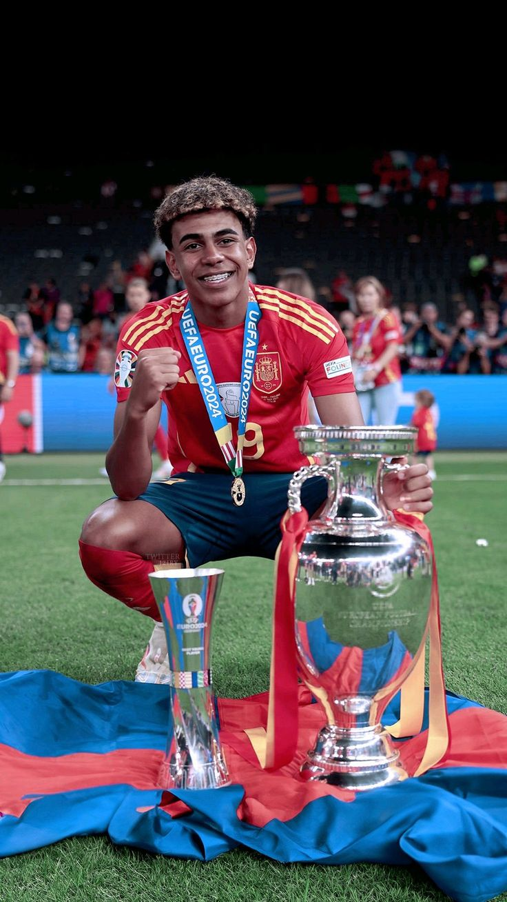

Los mejores jugadores: Pasado-Presente
Lionel Andrés Messi, conocido como "La Pulga", es considerado por muchos como el mejor futbolista de todos los tiempos. Su estilo de juego combina agilidad, visión, técnica y una capacidad única para definir partidos con goles o asistencias.
A lo largo de su carrera ha demostrado ser un jugador completo: puede regatear, asistir, marcar y liderar a su equipo dentro y fuera del campo.
Su nacionalidad es Argentina
Fecha de nacimiento: 24 de junio de 1987
Posición Delantero / Extremo derecho / Falso 9
Club actual Inter Miami CF (MLS)

Lamine Yamal Nasraoui Ebana es la nueva joya del FC Barcelona y de la selección española. A su corta edad, ya ha logrado hacerse un hueco en el primer equipo, impresionando por su madurez, desequilibrio y talento natural. Es considerado uno de los mayores prospectos del fútbol mundial.
Nacionalidad Española (de origen marroquí y ecuatoguineano)
Fecha de nacimiento 13 de julio de 2007
Posición Extremo derecho / Delantero
Club actual FC Barcelona
